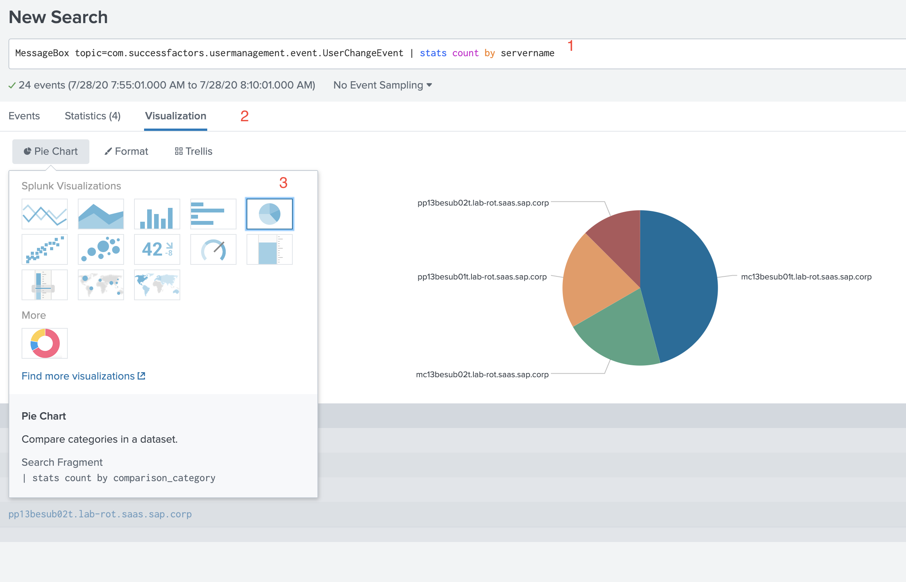
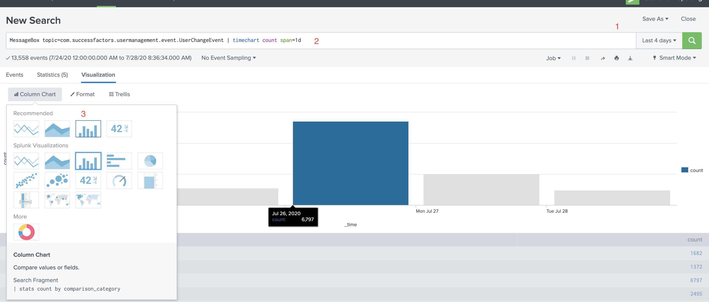
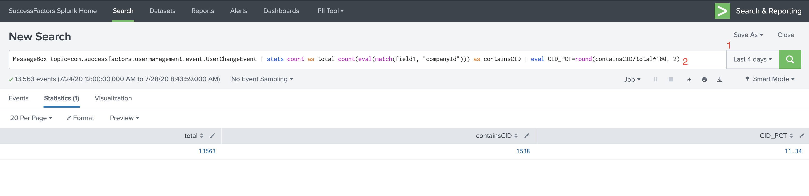

常用 Query
1 | -- event 出现的次数 |
查询 event 的日均量
1 | eventtype="searchAccountLocked" | timechart span=1d count | stats avg(count) |
通过 Regex 匹配得到目标百分比
1 | # 搜索全部 event, 通过 regex 匹配到目标，计算百分比 |
取两位小数
1 | | 7xAVG=round((7*total/1), 2) |
通过正则创建新 field
1 | # 选出结果集，从输出信息中匹配 'Company: ' 开头 ', total CommonField' 结尾的部分并命名为 cname 统计出现次数 |
stats 和 eval 的区别
stats 是对已经有的 field 的删选，而 eval 是通过已有的 field 计算出新的 field 加到结果集中进行删选，等价于新增 field
1 | # 删选 event, 新建一个 field 名叫 is_prod, 当 host 匹配 pattern 时赋值 yes_prod |
其中 eval 还支持多种删选条件，可塑性好高
1 | # 统计各环境的 event 数量并统计比例 |
Splunk SDK
尝试了 python 版本的 SDK，香！
参考 官方文档 下载依赖，在本地配置 .splunkrc 文件写入连接信息方便调用。第一次用的时候密码配错了，还以为内网不可用，需要用 vlab，再测试的时候发现了这个问题。总的来说很可以。
Steps:
- clone git 开源项目 Splunk SDK Python
- 用户目录下创建
.splunkrc文件 - cd 到
splunk-sdk-python/examplesfolder 下，运行命令python search.py "search * | head 10" --earliest_time="2011-08-10T17:15:00.000-07:00" --rf="desc" --output_mode=json可以看到对应时间戳下的前 10 条记录
.splunkrc 文件模板
1 | # Splunk host (default: localhost) |
三个小例子快速入门
搜索 event 并通过饼图展示
- 输入时间节点和关键词：
MessageBox topic=com.successfactors.usermanagement.event.UserChangeEvent | stats count by servername - 选择可视化 tab
- 选择饼图

显示每天的 event 量
- 选择时间
- 输入搜索条件:
MessageBox topic=com.successfactors.usermanagement.event.UserChangeEvent | timechart count span=1d - 选择图形

通过正则删选 event 并计算百分比
- 选择时间
- 输入删选条件:
MessageBox topic=com.successfactors.usermanagement.event.UserChangeEvent | stats count as total count(eval(match(field1, "companyId"))) as containsCID | eval CID_PCT=round(containsCID/total*100, 2)
